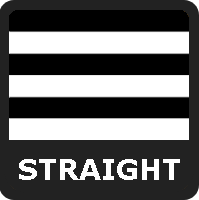
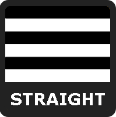

LEGAL
SOCIAL
ENTERTAINMENT

 

PRIDEvalues is a test which quantifies your support (or lack thereof) for the LGBT+ community, and tests for bias in your opinions on entertainment.
There are questions in the test.
There are three independent axes - Legal, Social, and Entertainment - and each has two opposing values assigned to them. They are:
LIBERTY
Those with higher Liberty scores believe the law should not restrict personal expression and sexuality. They tend to support gay marriage and transgender rights.
LEGAL
TRADITION
Those with higher Tradition scores believe the law should enforce classical family values. They tend to support strict marriage laws and usually oppose gender transition.
DIVERSITY
Those with higher Diversity scores are open-minded and non-judgemental. They often believe in freedom of expression, deconstructing social norms, and at high values, LGBT+ education.
SOCIAL
CONFORMITY
Those with higher Conformity scores are traditionalist. They often believe in old-fashioned gender roles, and at high values, conversion therapy and LGBT+ eradication.
LGBT+
Those with higher LGBT+ scores prefer queer stories. They tend to support an increase of LGBT+ characters in media, and at extreme values, total queer dominance in entertainment.
ENTERTAINMENT
STRAIGHT
Those with higher Straight scores prefer straight stories. They tend to oppose adding LGBT+ characters to media, and at extreme values, any queer presence at all.
¯\_(ツ)_/¯
If you have any suggestions or constructive criticism, feel free to open an issue on the GitHub page here: GitHub Page